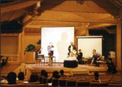
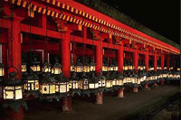

Nara, Japan's first capital

Nara Prefecture is an inland prefecture surrounded by the four prefectures of Osaka to the west, Kyoto to the north, Wakayama to the south and Mie to the east.
Nara occupies an important position in the history of Japan; it is said that the first state was located in Nara.
Nara is also a home of various World Heritage sites such as Todaiji Temple, Horyuji Temple, and others including numerous Buddhist art and architecture classified as National Treasures and Important Cultural Asset.
The ancient capital, Nara Heijokyo, established in 710 A.D. and modeled on Changan, Capital of Tang Dynasty China, was an international city,
designated by World Heritage as a historical asset.
Nara will soon celebrate the 13th centennial anniversary of its founding.
Horyuji Temple - the world's oldest wooden structure
http://www.horyuji.or.jp/horyuji_e.htm
The Venue - Noh Theatre Hall in Nara Prefectural New Public Hall
PFLDnet2006 will be held in Noh Theatre Hall in Nara Prefectural New Public Hall.
Speakers will have the once in a lifetime opportunity to present from the beautiful Noh Stage!


Festivals held in Nara during the PFLDnet period
February 3rd and 4th is [Setsubun] (the coming of Spring) in Japan.
http://en.wikipedia.org/wiki/Setsubun
For many centuries, the people of Japan have been performing rituals with the purpose of chasing away evil spirits at the start of spring.
Nara celebrates Setsubun with the following rituals on February 3.
Mantoro Lantern Lighting

Mantoro Lantern Lighting is a Shinto ritual held at Kasuga Taisha Shrine twice a year: on February 3 (Setsubun), and on August 14 and 15 (Chugen).
When evening approaches, 2,000 stone lanterns standing along the approach to the Shrine and 1,000 hanging bronze lanterns are lit.
Hanging lanterns shinning brightly make the red-painted main hall visible through the dark, and the stone lanterns dimlylight up the trees along the approach.
Onioi Festival (Kofukuji Temple and Horyuji Temple)
Six ogres violently running around wielding torches are calmed down by Bishamonten.
Then one of the Japanese seven lucky gods, Daikokuten appears and swings his Uchide-no-Kozuchi
(the lucky hammer) cerebrating that the ogres have been kicked out.
Fukumame(sacred soybeans) are scattered and the audience pick them up as a symbol of luck.
Helpful Links
Nara Prefecture
http://www.pref.nara.jp/nara_e/
Kansai Area Travel Guide
http://www.japan-guide.com/list/e1105.html
Japan National Tourist Organization (JNTO)
http://www.jnto.go.jp/eng/
Weather
http://weather.yahoo.com/forecast/JAXX0060_c.html?force_units=1